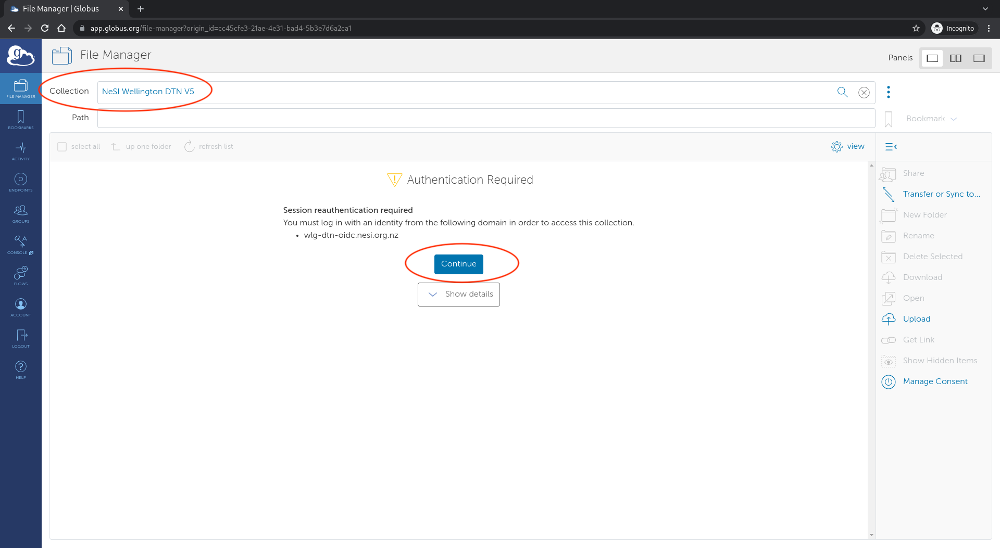
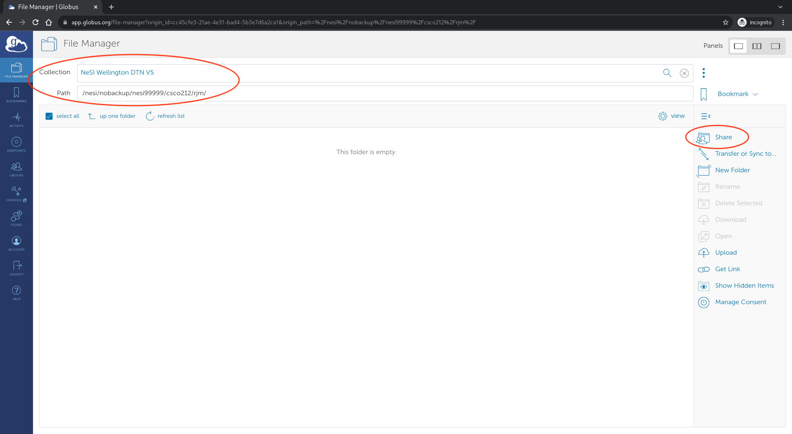
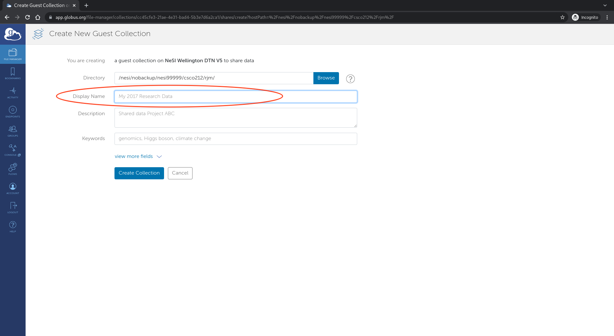
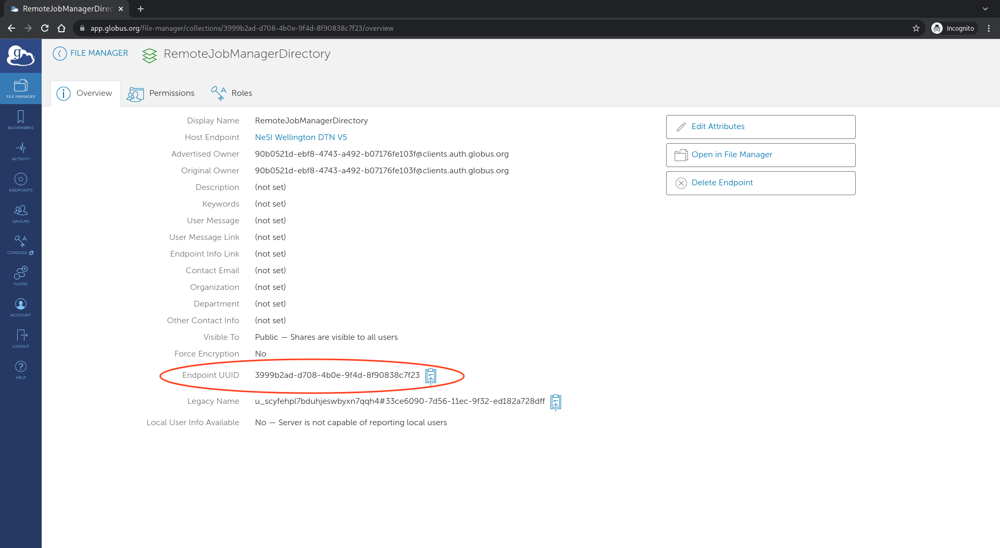

One-time setup¶
This guide has been tested with NeSI as the remote.
A Globus account is required: https://app.globus.org/ (you can usually use your institutional account to authenticate, e.g. University of Auckland).
Remote machine¶
Globus Guest Collection¶
On the remote machine (e.g. NeSI), you need to have a Globus Guest Collection. In Globus terminology, a Collection is a set of files and/or directories that can be shared via Globus. In this section we are sharing a specific directory on the remote machine, via Globus, so that the RJM tool can upload and downloads files to and from that directory. You should roughly follow the steps below to set this up.
Note: you must have write access to the Guest Collection. On NeSI, this means you should create the shared directory on the nobackup file system.
Open the Globus Web App file manager
Connect to the "NeSI Wellington DTN V5" Collection (requires NeSI 2 factor authentication)
Create and/or navigate to the directory you wish to use for remote jobs (on NeSI, it must be under /nesi/nobackup/...); and select the Share, then Continue on the "Authentication/Consent Required" page, if necessary
On the share settings page, select Add a Guest Collection

On the Create New Guest Collection page, make sure the Directory path is correct and give the collection a name (also make a note of the Directory as this will be required during Configuration)
Make a note of the guest collection Endpoint UUID as this will be required during Configuration


{kind=link}
{kind=link}
{kind=link}
{kind=link}
funcX endpoint¶
A funcX endpoint is also required on the remote machine. This allows us to run commands on the remote system.
On NeSI, first connect to a Mahuika login node. For example, using MobaXterm, JupyterLab or similar.
Note: if connecting via the JupyterLab terminal, make sure to ssh to a login node first, otherwise the funcX endpoint will be killed when your Jupyter session times out.
# the following should be run on a mahuika login node:
# (if using jupyter terminal, run
# "ssh login.mahuika.nesi.org.nz before continuing")
# load funcx endpoint software into the environment
ml purge
ml funcx-endpoint
# first time setup for funcx, will ask you to authenticate with
# Globus and copy a code back to the terminal
funcx-endpoint configure
# start the default endpoint
funcx-endpoint start
# verify the endpoint is running and obtain the endpoint id
funcx-endpoint list
Make a note of the Endpoint ID that shows up in the list command, you will need it during Configuration. The output from list will look something like follows:
+---------------+---------+--------------------------------------+
| Endpoint Name | Status | Endpoint ID |
+===============+=========+======================================+
| default | Running | ffd77d5c-b65f-4479-bbc3-66a2f7346858 |
+---------------+---------+--------------------------------------+
Note: we are effectively just using funcX as a Slurm API (running Slurm commands on the remote machine), so the default endpoint running on a login node is entirely appropriate and sufficient.
Also note: after running the above commands, it is safe to close the window, SSH connection, Jupyter session, etc. - funcX daemonises the process running the endpoint so it is no longer attached to the running session.
It may sometimes be necessary to restart the endpoint, for example if the login node was rebooted or some other issue occurred. The following would achieve this:
# the following should be run on a mahuika login node:
# (if using jupyter terminal, run
# "ssh login.mahuika.nesi.org.nz before continuing")
# load funcx endpoint software into the environment
ml purge
ml funcx-endpoint
# restart the default endpoint
funcx-endpoint restart
# verify the endpoint is running
funcx-endpoint list